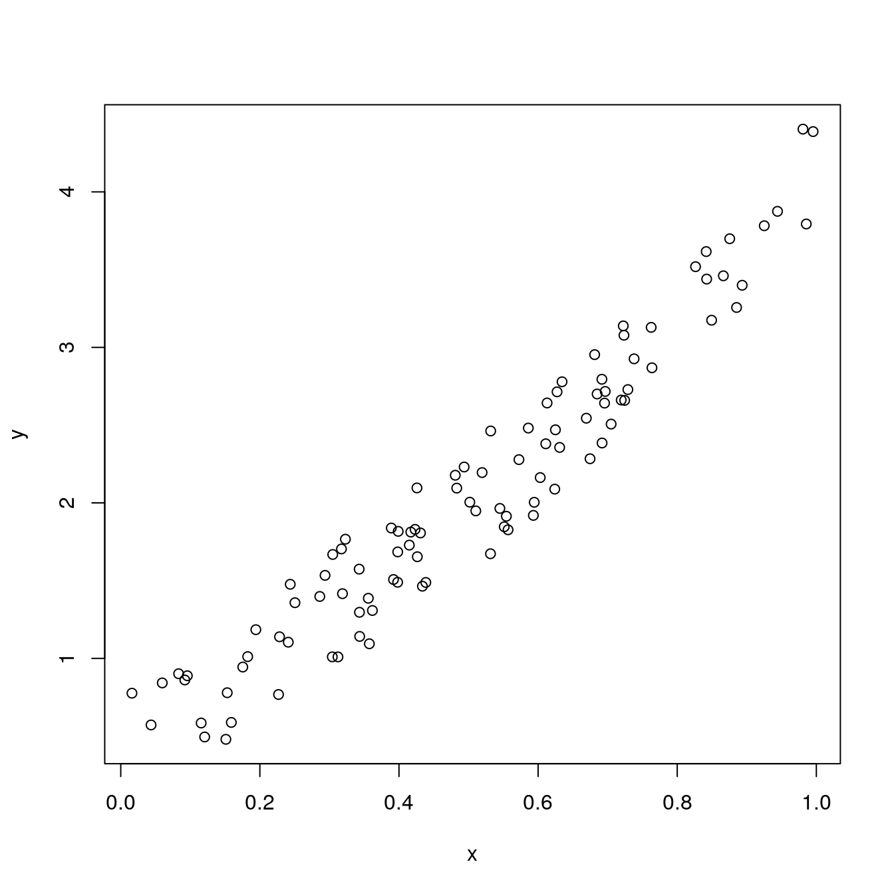

Chapter 1 Introduction
1.1 Motivation
Why do we want a package of something that is already working well, such as PyTorch?
There are several reasons, but the main one is to bring another machine learning framework to R. Probably it is just me but I feel PyTorch very comfortable to work with. Feels pretty much like everything else in Python. Pythonic. I have tried other frameworks in R. The closest that matches a natural language like PyTorch, is MXnet. Unfortunately, [MXnet] it is the hardest to install and maintain after updates.
Yes. I could have worked directly with PyTorch in a native Python environment, such as Jupyter or PyCharm but it very hard to quit RMarkdown once you get used to it. It is the real thing in regards to literate programming. It does not only contribute to improving the quality of the code but establishes a workflow for a better understanding of a subject by your intended readers (Knuth 1983), in what is been called the literate programming paradigm (Cordes and Brown 1991).
This has the additional benefit of giving the ability to write combination of Python and R code together in the same document. There will times when it is better to create a class in Python; and other times where R will be more convenient to handle a data structure. I show some examples using data.frame and data.table along with PyTorch tensors.
1.2 How do we start using rTorch
Start using rTorch is very simple. After installing the minimum system requirements -such as conda- you just call it with:
There are several way of testing if rTorch is up and running. Let’s see some of them:
1.2.2 PyTorch configuration
This will show the PyTorch version and the current version of Python installed, as well as the paths to folders where they reside.
rTorch::torch_config()
#> PyTorch v1.6.0 (~/anaconda3/envs/r-torch/lib/python3.7/site-packages/torch)
#> Python v3.7 (~/anaconda3/envs/r-torch/bin/python)
#> NumPy v1.19.1)1.3 What can you do with rTorch
Practically, you can do everything you could with PyTorch within the R ecosystem. Additionally to the rTorch module, from where you can extract methods, functions and classes, there are available two more modules: torchvision and np, which is short for numpy. We could use the modules with:
1.4 Callable PyTorch modules
1.4.1 The torchvision module
This is an example of using the torchvision module. With torchvision we could download any of the datasets made available by PyTorch. In this example, we will be downloading the training dataset of the MNIST handwritten digits. There are 60,000 images in the training set and 10,000 images in the test set.
transforms <- torchvision$transforms
# this is the folder where the datasets will be downloaded
local_folder <- './datasets/mnist_digits'
train_dataset = torchvision$datasets$MNIST(root = local_folder,
train = TRUE,
transform = transforms$ToTensor(),
download = TRUE)
train_dataset
#> Dataset MNIST
#> Number of datapoints: 60000
#> Root location: ./datasets/mnist_digits
#> Split: Train
#> StandardTransform
#> Transform: ToTensor()You can do similarly for the test dataset if you set the flag train = FALSE. The test dataset has only 10,000 images.
1.4.2 np: the numpy module
numpy is automaticaly installed when PyTorch is. There is some interdependence between both. Anytime that we need to do some transformation that is not available in PyTorch, we will use numpy.
There are several operations that we could perform with numpy:
Create an array
np$array(list(
list(73, 67, 43),
list(87, 134, 58),
list(102, 43, 37),
list(73, 67, 43),
list(91, 88, 64),
list(102, 43, 37),
list(69, 96, 70),
list(91, 88, 64),
list(102, 43, 37),
list(69, 96, 70)
), dtype='float32')
#> [,1] [,2] [,3]
#> [1,] 73 67 43
#> [2,] 87 134 58
#> [3,] 102 43 37
#> [4,] 73 67 43
#> [5,] 91 88 64
#> [6,] 102 43 37
#> [7,] 69 96 70
#> [8,] 91 88 64
#> [9,] 102 43 37
#> [10,] 69 96 70Reshape an array
For the same test dataset that we loaded above, we will show the image of the handwritten digit and its label or class. Before plotting the image, we need to:
- Extract the image and label from the dataset
- Convert the tensor to a numpy array
- Reshape the tensor as a 2D array
- Plot the digit and its label
rotate <- function(x) t(apply(x, 2, rev)) # function to rotate the matrix
# label for the image
label <- test_dataset[0][[2]]
label
#> [1] 7
# convert tensor to numpy array
.show_img <- test_dataset[0][[1]]$numpy()
dim(.show_img)
#> [1] 1 28 28
# reshape 3D array to 2D
show_img <- np$reshape(.show_img, c(28L, 28L))
dim(show_img)
#> [1] 28 28
Generate a random array
# set the seed
np$random$seed(123L)
# generate a random array
x = np$random$rand(100L)
# calculate the y array
y = np$sin(x) * np$power(x, 3L) + 3L * x + np$random$rand(100L) * 0.8
plot(x, y)
Convert a numpy array to a PyTorch tensor
This is a very common operation that I have seen in examples using PyTorch. Creating the array in numpy. and then convert it to a tensor.
1.4.3 Python built-in functions
To access the Python built-in functions we make use of the package reticulate and the function import_builtins().
Iterators
# iterate through training dataset
enum_train_dataset <- py_bi$enumerate(train_dataset)
cat(sprintf("%8s %8s \n", "index", "label"))
#> index label
for (i in 1:py_bi$len(train_dataset)) {
obj <- reticulate::iter_next(enum_train_dataset)
idx <- obj[[1]] # index number
cat(sprintf("%8d %5d \n", idx, obj[[2]][[2]]))
if (i >= 100) break # print only 100 labels
}
#> 0 5
#> 1 0
#> 2 4
#> 3 1
#> 4 9
#> 5 2
#> 6 1
#> 7 3
#> 8 1
#> 9 4
#> 10 3
#> 11 5
#> 12 3
#> 13 6
#> 14 1
#> 15 7
#> 16 2
#> 17 8
#> 18 6
#> 19 9
#> 20 4
#> 21 0
#> 22 9
#> 23 1
#> 24 1
#> 25 2
#> 26 4
#> 27 3
#> 28 2
#> 29 7
#> 30 3
#> 31 8
#> 32 6
#> 33 9
#> 34 0
#> 35 5
#> 36 6
#> 37 0
#> 38 7
#> 39 6
#> 40 1
#> 41 8
#> 42 7
#> 43 9
#> 44 3
#> 45 9
#> 46 8
#> 47 5
#> 48 9
#> 49 3
#> 50 3
#> 51 0
#> 52 7
#> 53 4
#> 54 9
#> 55 8
#> 56 0
#> 57 9
#> 58 4
#> 59 1
#> 60 4
#> 61 4
#> 62 6
#> 63 0
#> 64 4
#> 65 5
#> 66 6
#> 67 1
#> 68 0
#> 69 0
#> 70 1
#> 71 7
#> 72 1
#> 73 6
#> 74 3
#> 75 0
#> 76 2
#> 77 1
#> 78 1
#> 79 7
#> 80 9
#> 81 0
#> 82 2
#> 83 6
#> 84 7
#> 85 8
#> 86 3
#> 87 9
#> 88 0
#> 89 4
#> 90 6
#> 91 7
#> 92 4
#> 93 6
#> 94 8
#> 95 0
#> 96 7
#> 97 8
#> 98 3
#> 99 1Types and instances
# get the class of the object
py_bi$type(train_dataset)
#> <class 'torchvision.datasets.mnist.MNIST'>
# is train_dataset a torchvision dataset class
py_bi$isinstance(train_dataset, torchvision$datasets$mnist$MNIST)
#> [1] TRUElibrary(reticulate)
use_condaenv("r-torch", required = TRUE)
reticulate::py_discover_config()
#> python: /home/msfz751/anaconda3/envs/r-torch/bin/python
#> libpython: /home/msfz751/anaconda3/envs/r-torch/lib/libpython3.7m.so
#> pythonhome: /home/msfz751/anaconda3/envs/r-torch:/home/msfz751/anaconda3/envs/r-torch
#> version: 3.7.9 (default, Aug 31 2020, 12:42:55) [GCC 7.3.0]
#> numpy: /home/msfz751/anaconda3/envs/r-torch/lib/python3.7/site-packages/numpy
#> numpy_version: 1.19.1
#>
#> NOTE: Python version was forced by use_python function
reticulate::py_config()
#> python: /home/msfz751/anaconda3/envs/r-torch/bin/python
#> libpython: /home/msfz751/anaconda3/envs/r-torch/lib/libpython3.7m.so
#> pythonhome: /home/msfz751/anaconda3/envs/r-torch:/home/msfz751/anaconda3/envs/r-torch
#> version: 3.7.9 (default, Aug 31 2020, 12:42:55) [GCC 7.3.0]
#> numpy: /home/msfz751/anaconda3/envs/r-torch/lib/python3.7/site-packages/numpy
#> numpy_version: 1.19.1
#> torch: /home/msfz751/anaconda3/envs/r-torch/lib/python3.7/site-packages/torch
#>
#> python versions found:
#> /home/msfz751/anaconda3/envs/r-torch/bin/python
#> /home/msfz751/anaconda3/envs/r-torch/bin/python3
#> /usr/bin/python3
#> /usr/bin/python
#> /home/msfz751/anaconda3/bin/python
#> /home/msfz751/anaconda3/envs/porepy/bin/python
#> /home/msfz751/anaconda3/envs/r-tensorflow/bin/python